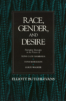

<body bgcolor="#FFFFFF" text="#000000" link="#0000FF" vlink="#CC0000" alink="#CC0000"><center><hr width="350" size="1" align="center" noshade>Explores the manner in which the politics of race and gender overdetermine narrative structures<hr width="350" size="1" align="center" noshade><p><a href="https://cdcshoppingcart.uchicago.edu/Cart/ChicagoBook.aspx?ISBN=9780877226086&&PRESS=temple" target="_top">Buy this book!</a> | <a href="https://cdcshoppingcart.uchicago.edu/Cart/Cart.aspx?PRESS=temple" target="_top">View Cart</a> | <a href="https://cdcshoppingcart.uchicago.edu/Cart/Cart.aspx?PRESS=temple" target="_top">Check Out</a></p><p></p></center><!--none//--><h1>Race, Gender, and Desire</h1>
<H2>Narrative Strategies in the Fiction of Toni Cade Bambara, Toni Morrison, and Alice Walker</H2>
<h3>Elliott Butler-Evans</h3>
<P>cloth 0-87722-608-3 $34.95, Jun 89, <FONT COLOR=#990033>Out of Print</FONT>
<br>paper 0-87722-831-0 $27.95, Mar 91, <FONT COLOR=#990033>Out of Stock Unavailable</FONT>
<BR> 232 pp
</P><BLOCKQUOTE><I>"Butler-Evans's work is everywhere sensitive to the nuances of textual disruptions, to subtle shifts of point of view and to rhetorical dissonance. His dense and adroit readings of even the most familiar writings force the reader to reconsider his or her relation to and understanding of the text in question.... An influential contribution to one of the most exciting new areas of literary study and critical/theoretical debate."</I>
<br>&#151<b>Valerie Smith</b>, Princeton University<I></I></BLOCKQUOTE>
<p>Employing interpretive strategies from semiotics, narratology, feminist theory, and ideological analysis, Elliott Butler-Evans explores the manner in which the politics of race and gender overdetermine the narrative structures of the fiction of Toni Cade Bambara, Toni Morrison, and Alice Walker. He argues that their writing is "often the site of dissonance, ruptures, and...a kind of
narrative violence generated by...these two distinctly different, and often contending, expressions of desire."
<p>For novelists such as those considered, the identification "black women writers" suggests the ideological duality that both limits and expands the meanings within their literature. After locating the nationalist, black aesthetic, and black feminist discourses in the writings of Morrison, Bambara, and Walker, Butler-Evans argues for a problematic tension between the racial and gender ideologies in the authors’ fictions of the 1970s. In a concluding chapter, he demonstrates how the writers’ use of post-modern narrative strategies enables them to figure a black feminist ideological position in their fictions of the 1980s.
<BR>&nbsp;<h2>Reviews</h2>
<p><I>"A work of engaging, challenging scholarship. The critical matrix that informs many of the important issues in contemporary critical/literary theory and a fine understanding of the often-dismissed Black Arts Movement whose suppositions, as he demonstrates, find refiguration in&#151and are challenged by&#151the work of Bambara, Morrison, and Walker.... He offers a much-needed study that boldly asserts the appropriateness of poststructuralist Afrocentric/feminist literary analysis. Many scholars are starving for sophisticated theoretical analysis of the brilliant work of Afro American writers such as Morrison, Walker, and Bambara. Butler-Evans's provocative study will provide such readers with much food for though, and may permanently alter the ways in which we read these writers."</I>
<br>&#151<b>Michael Awkward</b>, Center of Afro-American and African Studies, University of Michigan, Ann Arbor
<BR>&nbsp;<h2>Contents</h2><P>
<p>Acknowledgments
<br>Introduction
<br>1. Producing the Signs of Race: Self-Fashioning in Black Aesthetic Discourse
<br>2. Enabling Discourse for Afro-American Women Writers
<br>3. Racial Discourse, Aesthetics, and Desire in Morrison's <I>The Bluest Eye</I> and <I>Sula</I>
<br>4. Desire, Ambivalence, and Nationalist-Feminist Discourse in Bambara's Short Stories
<br>5. History and Genealogy in Walker's <I>The Third Life of Grange Copeland</I> and <I>Meridian</I>
<br>6. Rewriting and Revising in the 1980s: <I>Tar Baby</I>, <I>The Color Purple</I>, and <I>The Salt Eaters</I>
<br>Notes
<br>Bibliography
<br>Index
</P><BR>&nbsp;<H2>About the Author(s)</H2>
<P><b>Elliott Butler-Evans</b> is Associate Professor of English at the University of California, Santa Barbara.</P>
<BR><H2>Subject Categories</H2>
<p><A HREF="/tempress/literature.html" TARGET="_top">Literature and Drama</a>
</p>
<p align="center"><a href="https://cdcshoppingcart.uchicago.edu/Cart/ChicagoBook.aspx?ISBN=9780877226086&&PRESS=temple" target="_top">Buy this book!</a> | <a href="https://cdcshoppingcart.uchicago.edu/Cart/Cart.aspx?PRESS=temple" target="_top">View Cart</a> | <a href="https://cdcshoppingcart.uchicago.edu/Cart/Cart.aspx?PRESS=temple" target="_top">Check Out</a></p><p><font face="Arial" size="1"><a href="copyright.html" onMouseOver="window.status='Web Copyright Policy';return true;" onMouseOut="window.status=''" title="Web Copyright Policy">&copy;</a> 2015 <a href="http://www.temple.edu" target="new" onMouseOver="window.status='Link to Temple University home page';return true;" onMouseOut="window.status=''" title="Link to Temple University home page">Temple University</a>. All Rights Reserved. http://www.temple.edu/tempress/titles/610_reg.html</font></p>